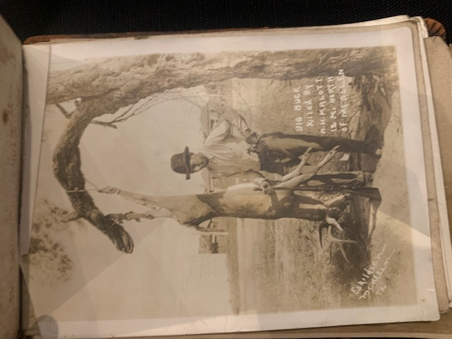

The Big Buck Hunt
A.H. Malott poses with his prize, 18 miles north of McAllen. This photo captures the adventurous spirit of the era and the rich natural environment of the Rio Grande Valley in the early 20th century.
← Back to Full GalleryThe Living Photograph
Watch as this hundred-year-old photograph is brought into the modern day with colorization.
Photo Details
- Subject: A.H. Malott
- Location: 18 miles North of McAllen, Texas
- Activity: Deer Hunting